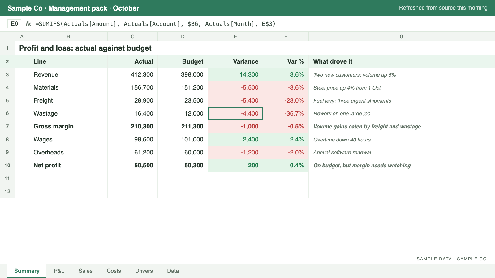

Our work
Who I've worked with.
Twenty years of reporting for listed and global companies, now set up for SMEs and not-for-profits.
Corporate
- Abbott Rapid Diagnostics
- Shine Lawyers
- Ritchie Bros. Auctioneers
- Alere
- Watpac Civil & Mining
- QM Properties
- AECOM
- Allianz Australia
Organisations your size
- A manufacturer
- A sole-trader fitness business
- A not-for-profit
Example: live dashboards
The same data, on the right screen for the room.
I've built live data displays for the warehouse floor, reception and the boardroom. Each one shows what that audience needs, and updates from the same source.


Sample data. Click an image to enlarge.
Example: reports
Reports built around the questions you ask.
Each report answers one plain question. Sample data shown; live interactive versions are coming.
Example: templates
Templates your team can run themselves.
A management pack workbook: actuals against budget, the variances explained, the assumptions in one place. It refreshes from your other systems with Power Query, so month-end is a refresh, not a rebuild.
- Month-end management packs
- Budgets and forecasts built on drivers
- Job, product and customer costing workbooks

Tools I work in
Technology agnostic: I work with what you already have.
Reporting and dashboards
- Excel
- Power BI
- Power Query
 Google Sheets
Google Sheets- Datawrapper
Data and automation
- Power Automate
- Azure
 SQL
SQL Python
Python R
R
ERP, CRM and payroll
- QAD
- TechnologyOne
- Salesforce
- Elite 3E (legal)
- Employment Hero
AI
 Claude
Claude

Take a break
Play the month-end run.
Thirty seconds: month-end by hand, then the same month once the reporting is built.
Contact
The fourth sheet, without the full-time hire.
For SMEs and not-for-profits that want what a seasoned finance team gives, without hiring one. No new systems and no major IT project: I work from the spreadsheets and systems you already have. Book a free 20-minute numbers check and I'll tell you what's possible with what you already have.
Prefer email or LinkedIn? Email TBC LinkedIn TBC